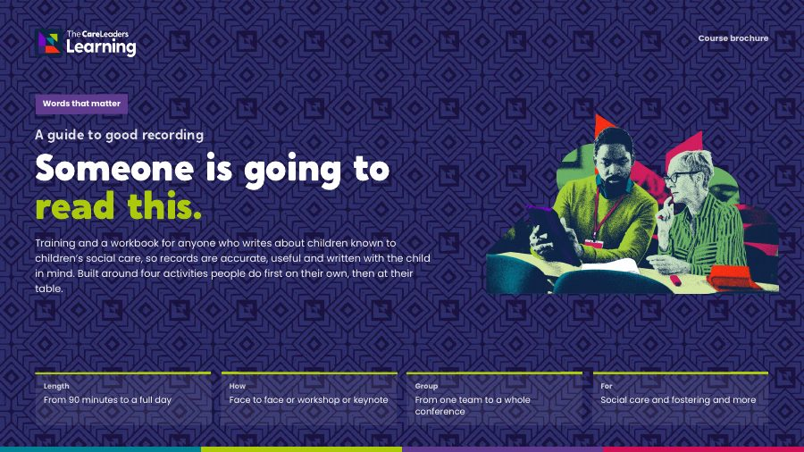

A Guide to Good Recording: recording training for social careSomeone is going to read this.
Training that helps your team write records for the child who may read them at 25. You leave with one of your own records rewritten to the child.
- Length
- 6 hours face to face, or 2 hours online
- Group
- Up to 60 face to face, 200 online
- For
- Anyone who writes in a child’s record
- Included
- Workbook, 12 months online, certificate

Records get read later. The next worker reads them, then managers and inspectors. Often the child does too, asking for their file as an adult. Weak case notes mix fact with opinion, hide the reasoning behind decisions and label children instead of describing them. UCL’s MIRRA research with care-experienced adults found gaps in how their childhood records were kept and how hard they were to access. What changes practice is working on real notes with one model.
Who it’s for
Social work teams
Social workers, senior practitioners and team managers
Fostering and family support
Fostering and adoption staff, early help and family support workers
Leaving care teams
Personal advisers and leaving care workers
Residential and reviewing staff
Residential staff, independent reviewing officers and business support staff
- Up to 60 face to face, 200 online
- One team or a mixed group
- No previous training needed
- Bring your own anonymised notes if you can
Learning outcomes
By the end of the course, people will be able to:
- 1
Describe what it is like for a care-experienced adult to read their childhood file, and what they look for in it.
- 2
Recognise how one ambiguous note about a home visit can give three readers three different pictures of a child.
- 3
Explain, using Eileen Munro’s research on errors of reasoning in child protection (1999), why separating fact, what was said and opinion makes a worker’s thinking visible and open to challenge.
- 4
Explain cumulative harm (Bromfield, Gillingham and Higgins, 2007) and why a chronology that records impact on the child is how a worker sees it.
- 5
Use “What do I think, why, and what should I do?” to record the analysis behind a decision, and build a chronology that records each event, its impact on the child and the action taken.
- 6
Write a case note or review report addressed to the child using Writing to the Child, replacing labelling language with a description of what happened and what the child said.
Our learning framework in this course
Every Care Leaders Learning course follows Story, Theory, Action. Here is how it runs through A Guide to Good Recording.
Story
Every part opens with someone reading a record.
Four composite stories. Bethany, 24, reads her care file. Ethan, 7, is pictured three ways from one home visit note. Lily, 12, has had five social workers in four years. Kieran, 10, reads his review report.
Theory
Then the research that explains what went wrong.
UCL’s MIRRA project with care-experienced adults. Eileen Munro on errors of reasoning. Bromfield, Gillingham and Higgins on cumulative harm. Brighton and Hove’s Me and My World evaluation and TACT’s Language that Cares.
Action
Then people rewrite real, anonymised notes.
A shared checklist for a good record and a three-question prompt for analysis. A chronology template with a worked example. One record rewritten to the child, before and after.
The course in four parts
Each part opens with someone reading a record, gives the research and ends with work on real notes. The stories are composites. They draw on real experiences of care but are not one person. Open a part to see what happens.
1Review a case note
Story. Bethany, 24, asks for her care file. When it arrives, the note about the day she was moved says “placement ended due to Bethany’s behaviour”. There is nothing about what happened that week or what she said.
Theory. UCL’s MIRRA project (2017 to 2019) worked with care-experienced adults on their records. It found that files shape how people understand their own childhood, and that gaps and poor recording make that harder. Adults have a legal right to ask for their records under data protection law, so every note should be written expecting to be read.
Action. Everyone reviews a real, anonymised case note on their own, marking what is good, poor or missing. They read it again as the child would at 24, then agree at their table what a good record must always include. Tables then swap notes and compare what each one missed.
By the end of this part people can review a case note against a checklist and explain why records matter to care-experienced adults who later read them.
 You leave with A shared checklist for a good record, agreed by your team.
You leave with A shared checklist for a good record, agreed by your team.
2Read the story
Story. A home visit note says: “Mum presented as hostile. House chaotic. Ethan, 7, seemed fine.” Three readers at the same table picture three different homes and three different Ethans.
Theory. Eileen Munro’s research on errors of reasoning in child protection (1999) found that workers often form a view early and then notice what fits it. Keeping what you saw, what you were told and what you think apart makes your reasoning visible, so a manager or the next worker can test it.
Action. People sort the note into three columns: seen, told and think. They then rewrite it with evidence for every opinion and answer three questions: what do I think, why, and what should I do? Partners swap rewrites and check that every opinion has its evidence.
By the end of this part people can separate fact, what was said and opinion in a note, and record the reasoning behind a decision.
 You leave with A three-question prompt for analysis, to use in every case note.
You leave with A three-question prompt for analysis, to use in every case note.
3Build a chronology
Story. Lily, 12, has had five social workers in four years. Each one recorded the missed school days, the bruise, the move to her nan’s. Nobody saw the pattern, because it was spread across hundreds of case notes.
Theory. Research on cumulative harm (Bromfield, Gillingham and Higgins, 2007) shows that many smaller events building up over time can harm a child as much as one serious incident. A chronology is how a worker sees that build-up, but only if it records the impact on the child, not just the event.
Action. People turn the home visit story from the last activity into chronology entries: date, what happened, the impact on the child and the action taken. They decide together what goes in and what stays out, then check whether a pattern shows. Each person then builds a short chronology from their own anonymised notes.
By the end of this part people can write chronology entries that record event, impact and action, and spot a pattern across entries.
 You leave with A chronology template, and a worked example built in the session.
You leave with A chronology template, and a worked example built in the session.
4Write to the child
Story. Kieran, 10, reads his review report with his foster carer. It says he “continues to display challenging behaviour”. He asks what “display” means, and why it doesn’t say he got star of the week.
Theory. Writing to the Child means writing case notes and reports to the child, as “you”. Brighton and Hove’s 2020 evaluation of its Me and My World approach found practitioners wrote more plainly and focused more on strengths, and children were more likely to attend their reviews. TACT’s Language that Cares (2019), written with children in care, shows which words label children and what to say instead.
Action. Language that Cares and Writing to the Child. Everyone rewrites one of their own records to the child, swapping labels for descriptions of what happened. A partner then reads it back as the child would and says what landed, and everyone rewrites a second record using what they heard.
By the end of this part people can write a case note addressed to the child and replace labelling language with a plain description of what happened and what the child said.
 You leave with One record rewritten to the child, with before and after versions to share with your team.
You leave with One record rewritten to the child, with before and after versions to share with your team.
What you get with each course
Included for every delegate, however you run it.
A workbook to keep
Every delegate gets their own copy, with the stories, the tools and space to plan.
The online course for 12 months
An interactive course on The Care Leaders Online, for 12 months after the training.
The recording for 12 months
Live online sessions are recorded, so people can catch up or go back over a part.
A certificate of completion
For each delegate, to keep for their own development record.
Choose how you run it
Two ways to run the course.
Face to face
We come to you for a training day, 10am to 4pm. The day covers all four parts. There is time on anonymised notes from your own system, and to rewrite a real record to the child.
- When One day, 10am to 4pm
- Group Up to 60 people
- You provide A screen or projector with an HDMI connection
- We provide The facilitator, a workbook for every delegate and 12 months of the online course
Live online
A live session on Teams or Zoom covering the key story, theory and tool from each part. Breakout rooms are used for the case note work. The chronology and your own rewrite are finished afterwards in the workbook.
- When One 2-hour session
- Group Up to 200 people
- You provide A device with a camera, microphone and internet connection for each delegate
- We provide The facilitator, the online links for delegates, a workbook for every delegate, 12 months of the online course and the recording
What changes
- Separate what they saw, what they were told and what they think, and make each clear in the note.
- Record the reasoning behind a decision, not only the decision.
- Keep a chronology the next worker and the next review can use in minutes, and that shows patterns over time.
- Write case notes, reports and letters to the child, in plain words the child would recognise.
- Describe what a child did and said, instead of reaching for labels such as “attention seeking”.
- Records they can read and recognise themselves in, now or years later.
- Clear reasons, in writing, for the big decisions made about their lives.
- Their own words and views, recorded as they said them.
- Descriptions of what happened, not labels that follow them from file to file.
Delivered as a conference day for Devon in September 2026, with a workbook for every delegate.
Download the good recording brochure
The four activities, what changes for staff and children, the formats and how to book, in one PDF to share with colleagues.
Thank you. Your brochure is downloading.
If it didn’t start, open the brochure here.

Questions commissioners ask
How is the session structured?
Four activities, each built the same way. Story: someone reading a record, such as Bethany reading her own file at 24, or Kieran asking what “display” means. Theory: the research that explains it, from Eileen Munro on reasoning to cumulative harm and Writing to the Child. Action: people work on real, anonymised notes, first on their own, then at their table. Face to face it is a 6-hour day, 10am to 4pm, covering all four. Live online it is one 2-hour session covering the key story, theory and tool from each activity, with the workbook and on-demand course to go deeper.
Do people work on real case notes?
Yes. Bring real, anonymised case notes. Each activity is done on your own first, then discussed at your table, and everyone rewrites one record to the child before they leave.
Can it respond to what our audits are finding?
Yes. One section of the workbook is written for your own procedures and audit findings, and we give your practice leads a short summary of what the room said.
Is this only for social workers?
No. It is for anyone who writes in a child’s record, including early help, fostering, adoption, residential, leaving care and business support staff. Mixed groups work well because they show how one note is read by different people.
Can our staff run it again?
Yes. We can hand over the slides and facilitator notes so your practice leads can run the activities with new starters.
Who delivers it, and how do you price it?
People with lived experience of care and professional experience of children’s services. The course was designed by Luke Rodgers BEM. Each format has one flat fee. Face to face covers up to 60 people, and over 60 we charge for an additional facilitator. Live online covers up to 200 people. The workbook, the online course and the recording are included in the flat fee. Tell us what you need and we will send you a quote.
Often booked with
 Language that LiftsThe words we use about children in care, and the ones that help them feel like children.6 hours face to face, 2 hours online
Language that LiftsThe words we use about children in care, and the ones that help them feel like children.6 hours face to face, 2 hours online Living a Careless LifeLived and professional experience of growing up with a social worker, and what it means for your practice.6 hours face to face, 2 hours online
Living a Careless LifeLived and professional experience of growing up with a social worker, and what it means for your practice.6 hours face to face, 2 hours online The Practice ToolkitPACE, Spot Soothe Shift, the Window of Tolerance and more, taught as tools people practise in the room.6 hours face to face, 2 hours online
The Practice ToolkitPACE, Spot Soothe Shift, the Window of Tolerance and more, taught as tools people practise in the room.6 hours face to face, 2 hours onlineTalk to us about A Guide to Good Recording
Tell us who it is for and roughly how many people. We will shape it around your service and send you a quote.